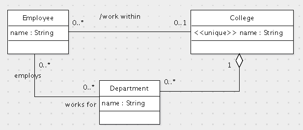
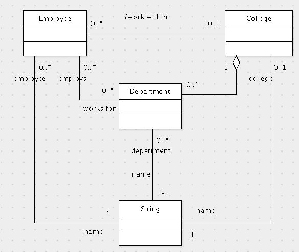

Problems 1, 2, 3 and 6 on the exam use this schema and statistics for a bakery database:
create table Dessert(
id int primary key,
name varchar(300),
description varchar(2000)
);
create table Material(
name varchar(100) primary key,
unit varchar(20) not null
);
create table Ingredient(
dessert int references Dessert(id) on delete cascade on update cascade,
material varchar(100) references Material(name)
on delete cascade on update cascade,
amount double not null,
primary key(dessert, material)
);
create table Cake(
id int primary key references Dessert(id) on update cascade on delete cascade,
shape varchar(100)
);
create table Cookie(
id int primary key references Dessert(id) on update cascade on delete cascade,
weight double not null
);
public Set<Cake> getChocolateCakes(EntityManagerFactory factory) {
EntityManager em = factory.createEntityManager();
em.getTransaction().begin();
Query q = em.createQuery("select c from Cake c join c.ingredients i where i.material.name='chocolate' and i.amount>=5");
Set<Cake> cakes = new HashSet<Cake>();
for (Cake cake : (List<Cake>) q.getResultList()) {
cakes.add(cake);
}
em.getTransaction().commit();
em.close();
return cakes;
}
Scoring criteria (1 point each):
An ingredient record requires 10+4+50+8=72 bytes. There are 10K desserts each of which has 20 ingredients on average, for a total of 200K ingredient records or 72*200K = 14,400K bytes or about 1.8K blocks for the heap and 2.7K blocks for a B-tree.
Scoring criteria (1 point each):
Only the Ingredient table is used for either file structure. For the clustered heap one must scan the entire table. Using the computation from the first part of the problem this requires 6ms + 1,800 * 0.6ms = 1086ms or about 1 sec. For the clustered B-tree, one can use the index because the dessert id is the first column. As only 20 ingredients are retrieved on average, they will nearly always be in the same block. So it will require 6ms + 6ms = 12ms in all.
Scoring criteria (1 point each):
select d.description
from Dessert d, Cake c, Cookie k
where c.id = d.id
and k.id = d.id
and d.name like 'Z%';
Show the optimized query plan for this query using the following table structures. Estimate the size of the data flow (number of records) along each edge in the query evaluation plan.
There are 26 letters in the alphabet so one would expect about 384 desserts to match.
This is much lower than the number of records in the Cookie and Cake tables, but
when record sizes are considered, the Cookie table is somewhat smaller. This would
suggest that the Cookie table should be the first one. So I accepted using either
the Dessert table or the Cookie table as the first one. All of the joins must be
sort-merge joins because the number of records is too large to use the indexes.
The wildcard match could have used the name index, but the number of records is
too large for this to be more efficient. So here is the query plan:
Scoring criteria (1 point each):
R3(B) W1(C) R2(B) W3(C) W3(A) R1(B) W2(C) C2 R1(A) C3 C1
Determine whether this schedule is view serializable. If it is view serializable, then give a view equivalent serial schedule. If it is not view serializable, then explain why not.
It is not conflict serializable, so the only way to show
view serializability is to find an equivalent serial schedule.
It is view serializable in the order 3, 1, 2:
R3(B)
W3(C)
W3(A)
C3
W1(C)
R1(B)
R1(A)
C1
R2(B)
W2(C)
C2
This is the only order that is view equivalent.
Scoring criteria:
The UML diagram is

As an alternative, one can model the name attributes using associations
as in this diagram:

The translation of either of these to the relational model is:
create table College(
id int primary key,
name varchar(200) not null unique
);
create table Employee(
id int primary key,
name varchar(200) not null
);
create table Department(
id int primary key,
name varchar(200) not null,
college int not null,
foreign key(college) references College(id) on update cascade on delete cascade
);
create table Employment(
employee int,
foreign key(employee) references Employee(id) on update cascade on delete cascade,
department int,
foreign key(department) references Department(id) on update cascade on delete cascade,
primary key(employee, department)
);
create view WorksWithin(employee, college) as
select distinct e.employee, d.college
from Employment e, Department d
where e.department = d.id;
Scoring criteria (0.5 points each, except as noted):
The view unique constraint would have to be enforced by a mechanism such as a trigger. In such a trigger the view would be computed and the constraint would be checked. Simply saying that one would use a trigger and then restating the problem to be solved is not an acceptable answer. One must show the SQL query that the trigger would evaluate and the SQL constraint it would check.
There are two parts to this problem. A view must be developed and
a grant command executed:
Giving select privileges on various tables would be appropriate in practice,
but no points were deducted if this was not done.
create view CakeView as
select i.*
from Ingredient i, Cake c
where i.dessert = c.id;
grant insert, update, delete on CakeView to 'Alice';
Scoring criteria (1 point each):
© 2011 Ken Baclawski. All rights reserved. Redistribution and use in source and binary forms, with or without modification, are permitted provided that redistributions and uses retain this copyright notice.